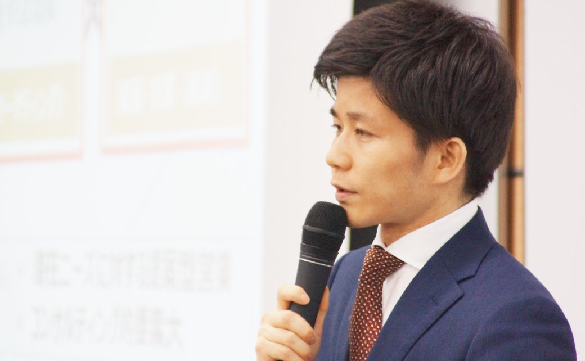
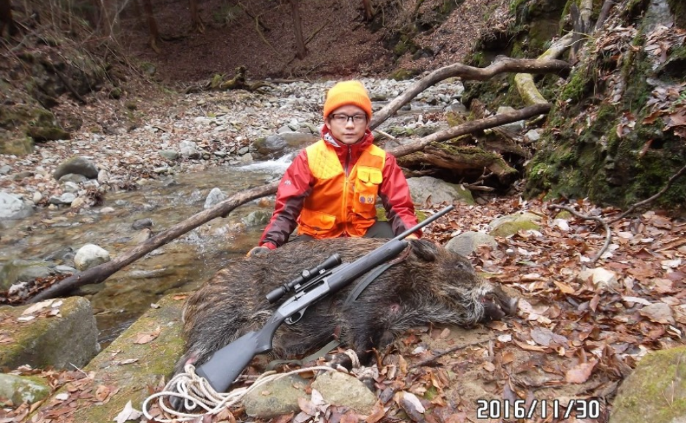

卒業生の声
研究生活で培った「現場力」が、
ビジネスでも武器になる

廣瀬大悟
株式会社 船井総合研究所
2018年卒業
指導教員：松本尚之
研究テーマ：
「職業としての狩猟」
Q1.当領域への進学の経緯
私は社会人大学院生として当コースに再入学しています。学部時代に出会った文化人類学、狩猟研究が高じて、知人と一緒に狩猟ビジネス会社を立ち上げることになりました。せっかくなので単に稼ぐだけでなく、学問としても残したい、知的好奇心を探求したいと思い、会社の立ち上げから1年後に出戻りで大学院に再入学しました。
Q2.大学院卒業から、現職までの経緯
ビジネスを創り、稼ぐ力を身に着けられる業界に身を置こうと考え、現在の職場（船井総合研究所・経営コンサルティング業）に入ることに決めました。
なぜかというと、狩猟ビジネスに当事者として携わり、狩猟の産業化に本気で取り組むなかで「経営」の大切さを痛感したからです。いくら理念があり、社会性が高くとも、「稼げない産業」はそもそも成り立ちません。
また、船井総合研究所は「収益性・教育性・社会性」という3つの軸で企業の成長をサポートするという考え方があり、そこに共感したことが大きかったです。
Q3.院生活が現在にどのように活きているか
「現場力」ともいえる、事例に基づく帰納的な思考方法、観察力、ヒアリング力が非常に役に立っています。
私の大学院での研究は、実際に狩猟ビジネスの現場（例えば標高2,000mの国立公園でシカを捕獲する公共事業など）に立ち、そこから「現代日本における職業としての狩猟」を描き出すというアプローチでした。これは、歴史、自然環境、政策などの「大きな流れ」と、現場で得た生のデータを突き合わせて、仮説を構築、検証してゆく作業です。
今、私が携わっている仕事は、中小企業の業績アップコンサルティングです。日々、事例となるモデル企業を探し、企業の現場に入り込み実行支援をします。そこから得たノウハウを体系化し、コンサルティングしてゆくわけですが、こういった場面で「現場力」が大いに活かされていると感じます。
Q4.今後の目標
今の会社での仕事を通じて、新たな産業を創りだせる力、どこに行っても稼げる＆稼がせられる力を身に着けたいと思っています。
その後、また狩猟ビジネスに身を置くこともあるかもしれません…。本場、アフリカに渡ってビジネスを興す、なんてことを考えると、とてもワクワクします。笑
Q5.後輩へのアドバイス
大学院での研究は、根本的に「自身の知的好奇心」が原動力であると思います。振り返ってみて、そこにどっぷり浸かれる時間というのは、かけがえのないものだと思います。（社会に出ると、なかなかそうもいきません・・・）
一方で、知的好奇心だけでは「研究成果」としては認められないという部分も、面白いところではないでしょうか。「巨人の肩の上に立つ」という言葉に代表されるように、論理性、独自性、客観性など、ビジネスの場面でも役に立つ思考回路や能力が、イヤでも身に付きます。
ぜひ、全力で研究に浸かり、苦しみつつも楽しい大学院生活を送ってください！
